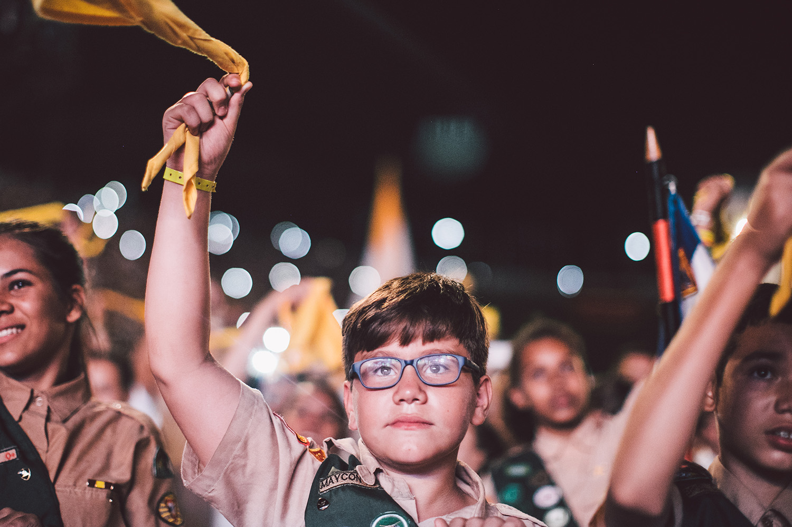

Meninos e meninas com idades entre 10 e 15 anos, de diferentes classes sociais, cor, religião. Reúnem-se, em geral, uma vez por semana para aprender a desenvolver talentos, habilidades, percepções e o gosto pela natureza.
As unidades no clube de Desbravadores constituem o núcleo principal de seu funcionamento. Se as unidades estão funcionando bem, logo o clube também está funcionando bem. Uma unidade é formada por 4 a 8 meninos e meninas, sendo que são separadas por faixa etária e por sexo, tendo como coordenador o Conselheiro.
| Unidades | |
|---|---|
| Unidades Desbradores Feminina | Unidades Desbradores Masculina |
| 8 Meninas | 8 Meninos |